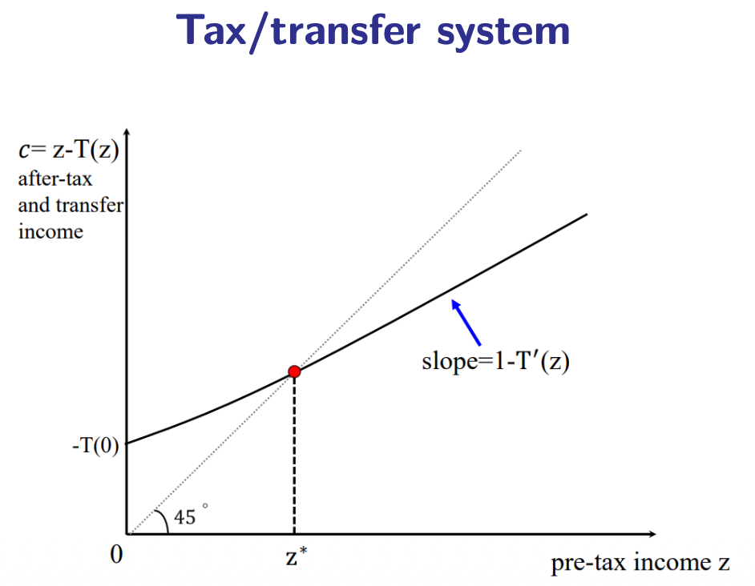

10.4 — UBI, Tax Evasion & The Height Tax Paradox
Chapter 10: Optimal Taxation & Personal Income Tax — Real-World Complications
The Tax-Transfer System as a Budget Constraint
The full picture of income taxation is not just about what you pay at the top — it also includes what transfers people receive at the bottom. The tax-transfer system can be visualized as a budget constraint linking pre-tax income $z$ to after-tax income $c$.

The dotted 45° line represents the no-tax benchmark: every additional euro earned translates one-for-one into disposable income. The solid curve shows actual after-tax income $c = z - T(z)$.
- The slope of the curve is $1 - T'(z)$, where $T'(z)$ is the marginal tax rate. A higher marginal rate flattens the curve — each extra euro earned translates into a smaller increase in disposable income, directly reducing work incentives.
- The intercept $-T(0)$ can be positive, meaning individuals with zero income receive a transfer (negative tax). This represents welfare benefits, minimum income guarantees, or Universal Basic Income.
- The vertical gap between the 45° line and the solid curve at any income level $z$ is the tax paid (or benefit received) $T(z)$ at that income level.
Problem 3 (Lower Tail): Who Gets Transfers & Universal Basic Income
The lower end of the income distribution presents a distinct policy challenge: people who earn very little or nothing receive transfers rather than paying taxes. Designing these transfers optimally is as important as designing the marginal rate schedule at the top.
❓ Who Should Be Eligible?
Traditional welfare programs use means-testing: only those below a certain income threshold qualify. But means-testing creates high effective marginal tax rates at the bottom — as earned income rises, benefits are withdrawn at near-100% rates, discouraging low earners from working more.
Example: If you earn €200/month more but lose €180 in benefit → your net gain is only €20. The effective marginal rate is 90%.
💶 How Large Should Transfers Be?
Larger transfers reduce poverty but cost more (higher tax revenue needed) and increase the work disincentive. The optimal size depends on the SWF, the elasticity of labor supply at the bottom, and the available tax base.
The Mirrlees insight: Transfers are efficient if they increase extensive-margin participation (more people entering the labor market earns more total revenue).
Definition: Providing all citizens of a country with a given sum of money, regardless of their income, resources, or employment status.
Aims:
- Alleviate poverty with certainty — no one falls through the cracks
- Replace many complicated, costly, and stigmatizing welfare schemes with a single universal payment
- Remove the poverty trap — since UBI is universal, there is no benefit withdrawal as income rises, so effective marginal rates are lower at the bottom
Financing: Typically proposed to be funded through a more progressive income tax — higher rates on top incomes fund the universal floor payment. Novel proposals include a robot tax (Costinot & Werning, 2023): as automation displaces workers, a tax on robots/automation revenue could fund the UBI, transferring income from capital to labor.
Problem 2: Imperfect Information & Tax Evasion
A second major problem for income taxation is that taxpayers have a direct incentive to conceal income or misreport it in order to reduce their tax liability. Tax evasion is not a marginal concern — it substantially inflates observed behavioral elasticities and undermines the revenue base.
🏗️ Self-Employment & Entrepreneurs
When income is self-reported without third-party verification, opportunities for evasion are abundant: underreporting revenue, overstating business expenses, mixing personal and business consumption, paying family members who do not work, delaying income recognition.
This is why optimal rates for entrepreneurs (Dušek & Šatava, 2015) are estimated to be lower — not because we want to be generous, but because their higher elasticity reflects partly tax avoidance.
🏢 Employment with Third-Party Reporting
When your employer reports your salary directly to the tax authority (as in most employment relationships with PAYE/withholding systems), evasion is nearly impossible. The information exists in two independent records, so misreporting is easily detected. This is why income taxes on wages are more easily collected than taxes on self-employment income.
Common evasion strategies include:
- Misinvoicing — reporting fictitious or inflated costs between related parties across borders
- Underreporting — simply declaring less income than actually earned (cash businesses)
- Claiming undue deductions — inflating expenses, personal consumption as business expenses
- Income shifting — converting labor income to capital income (lower rate), or shifting to family members in lower brackets
One of the most powerful pieces of evidence for behavioral responses to taxation is the phenomenon of bunching at kinks. In a progressive tax system, each bracket boundary creates a "kink" in the budget constraint — the marginal rate jumps discontinuously at these points.
If there were no behavioral response at all, the distribution of income would be smooth. But empirically, we observe excess mass (bunching) in the distribution of reported income just below each kink — individuals manipulate their reported income to stay just below the high-rate bracket. This bunching behavior provides clean estimates of the elasticity of taxable income.
Policy implication: Bunching is evidence that the behavioral response to marginal rates is real. It also reveals that the response is partly avoidance/evasion (shifting reported income), not just real labor supply reduction.
The shadow economy (also called informal economy or underground economy) refers to economic activity that is deliberately concealed from tax authorities. IMF data show that shadow economies represent anywhere from 5–10% of GDP in developed countries to 30–50% of GDP in many developing nations.
The shadow economy is itself a form of behavioral response to taxation — high marginal rates increase the reward to informality. It erodes the tax base, shifts the burden to compliant taxpayers, and creates unfair competition between formal and informal firms.
The Height Tax Paradox: Mankiw & Weinzierl (2010)
One of the most thought-provoking results in optimal taxation is the so-called height tax, proposed seriously by Mankiw and Weinzierl (2010) as a logical implication of the Mirrlees framework.
According to optimal taxation theory, the ideal tax base should have three properties:
✅ Exogenous
The tax base should not be alterable by the individual's behavior. If people can change it to avoid taxes, the tax creates distortions and avoidance opportunities.
✅ Observable
The tax authority must be able to measure it accurately and objectively. Unobservable characteristics create vast opportunities for cheating and false reporting.
✅ Correlated with Ability
If we want redistribution, we need the tax base to be positively correlated with economic productivity so that we tax the able to give to the less able.
| Tax Base | Exogenous (a) | Observable (b) | Correlated with Ability (c) |
|---|---|---|---|
| Height | ✅ Very good — you cannot change your height | ✅ Very good — measured objectively with a ruler | ✅ Works empirically — taller people earn more on average |
| Income | ❌ Not OK — income = productivity × effort → effort is chosen, creating DWL | ❌ Not OK — shadow economy, self-employment → systematic underreporting | ✅ The best we have — strongly correlated with ability and productivity |
The mathematics of the Mirrlees model actually works for height. The optimal height tax would be substantial:
"A tall person earning $50,000 should pay about $4,500 more in taxes than a short person earning the same income."
— Mankiw & Weinzierl (2010)
Height satisfies all three properties better than income on two of three dimensions. If the theoretical framework is correct, we should be seriously considering taxing height.
But of course, virtually no one supports a height tax. Mankiw and Weinzierl use this paradox to provoke a deeper question: what does our intuitive rejection reveal? They propose two possible interpretations:
✅ We Should Tax More Such Things
If we are consistent with the theory, perhaps we should tax other exogenous, observable, productivity-correlated characteristics — or at least consider them. This points toward taxes based on genetic predispositions, family background, innate ability, or inherited wealth (which are also exogenous and correlated with income).
This is actually the implicit logic behind wealth taxes and inheritance taxes — taxing something partially exogenous rather than earned income.
🤔 The Theory Fails to Capture Distributive Justice
Perhaps our strong intuitive rejection of the height tax reveals that the utilitarian/Mirrlees framework misses something fundamental about distributive justice. Our moral intuitions may require that tax burdens be connected to choices and outcomes (income earned), not to unchosen characteristics (physical traits). This connects to libertarian and Kantian critiques of purely welfarist optimal tax theory.
For the exam: The height tax is not just a curiosity — it is a stress test for optimal tax theory. Know the three properties (exogenous, observable, ability-correlated), know how height and income compare on each dimension, and be prepared to discuss both interpretations of the paradox. This is an excellent discussion question because it connects positive theory (what the model implies) to normative philosophy (what our intuitions require).
Chapter 10 — Grand Conclusion: A Short Guide to Optimal Rates
After Mirrlees, Saez, and the empirical literature, we have a comprehensive framework for thinking about optimal tax rates. Three key factors determine the estimated optimal top marginal rate $t^*$:
📉 Elasticity
Lower elasticity of taxable income → higher optimal rate. If high earners cannot avoid the tax (no evasion, no emigration), there is less behavioral cost to taxing them heavily.
📊 Distribution
More inequality (thicker right tail of income distribution) → higher optimal rate. There is more revenue to gain from the rich, and more redistribution is socially desirable.
⚖️ Social Welfare Function
More Rawlsian or more pro-poor SWF → higher optimal rate. Caring more strongly about the worst-off justifies more redistribution from the top.
| Study | Context | Estimated Optimal Top Rate | Key Drivers |
|---|---|---|---|
| Saez (2001) | United States | 50–80% | High inequality, moderate elasticity, mixed SWF |
| Dušek & Šatava (2015) | Czechia — Employees | 33–43% | Lower inequality, higher elasticity for Czech context |
| Dušek & Šatava (2015) | Czechia — Entrepreneurs | Lower than employees | Much higher evasion elasticity; income shifting is easy |
Chapter 10.4 — The Big Picture:
- Budget constraint: Slope = $1 - T'(z)$ (marginal rate). Intercept = benefit for zero-income. Captures both redistribution and distortion simultaneously.
- Lower tail problem: Means-testing creates high effective marginal rates (poverty trap). UBI solves this but is expensive. Must be financed by progressive income tax (or robot tax).
- Tax evasion: Third-party reporting (employment) → low evasion. Self-employment → high evasion. Bunching at kinks = behavioral evidence. Shadow economy = GDP-significant informal activity.
- Height tax (Mankiw & Weinzierl, 2010): Ideal tax base = exogenous + observable + correlated with ability. Height scores better than income on (a) and (b). Math works. We reject it intuitively → two interpretations: tax more characteristics, OR theory fails to capture distributive justice.
- Three factors for optimal rate: Low elasticity → higher rate. High inequality → higher rate. Rawlsian SWF → higher rate.
- Meta-lesson: Economics structures the debate; it cannot choose your values. Optimal rate depends on empirical inputs AND ethical commitments.